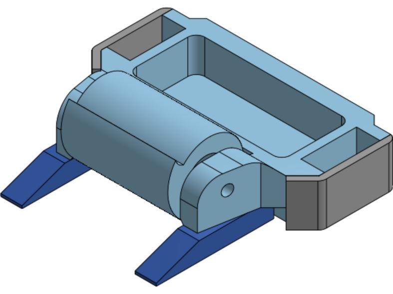
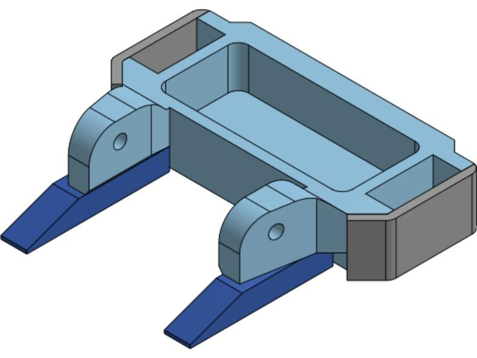
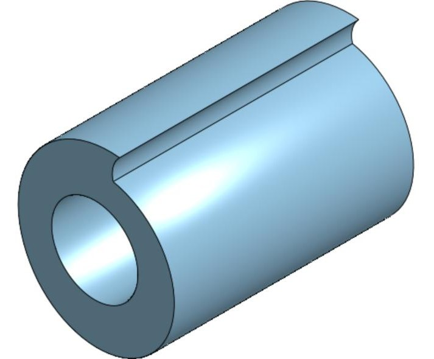

ARMin is a low-cost robotic arm built as a proof of concept for prosthetics. I designed the fingers, researched cheaper materials for upper-arm prosthetics, and printed and assembled the prototype.
Each finger has two joints. The links are 3D printed and pinned together with socket-head cap screws, and a tendon pulls the finger closed, which keeps the actuators out of the finger itself. I adapted the same design into separate subassemblies for the index/ring, middle, pinky, and thumb.
The full arm is a 3-DOF assembly made of a base that holds the electronics, the bicep, a 2-DOF elbow, the forearm, and the hand.
Onshape · 3D printing · assembly · technical writing

Chassis, forks, and drum assembled

Chassis V2

Drum
1 lb drum spinner
Fall 2026 – present · RoboJackets BattleBots
I'm the mechanical engineer on our team's 1 lb bot, so I picked the archetype and I'm designing the chassis and weapon. We went with a vertical drum spinner. The rules only allow PLA for the structure, so every part is designed to be printed.
Chassis V2 is a single part studio with the frame, both side plates, and both forks, which keeps everything lined up when I change a dimension. The frame is shelled out to save weight, the left and right sides are mirrored, and the edges that take hits are filleted or chamfered. The drum is a hollow PLA cylinder with a motor slot and a bearing slot cut in.